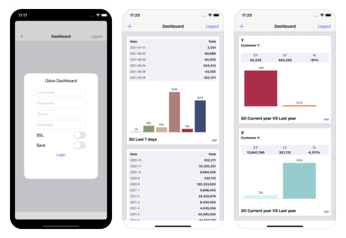

Odoo iOS mobile Dashboard
This module is required in order to use Odoo dashboard app (available only on Apple AppStore)
it connects databases locally or remotely (MSSQL, MySQL, Postgres), schedules SQL requests and retrieves data.
It could behave as a gateway between your database (Odoo ERP or not) and iOS devices (iPhone and iPad).
Published data have a mandatory format.
Widgets available:
- WidgetXVsY: Compare 2 numbers, widget will calculate difference and variation
- WidgetLastX: Could be used to display last x days, months, years data
- WidgetSingleX: Display a relevent number
User access can be managed through the menu access group.
Package pyodbc is required: apt-get install python3-pyodbc python-pyodbc
